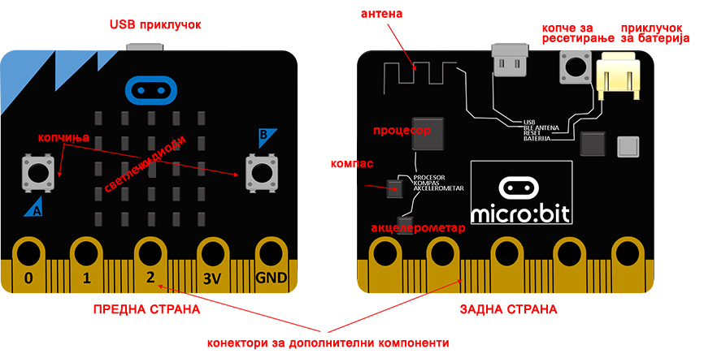
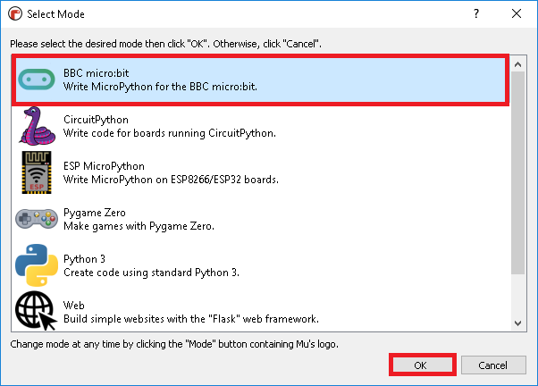
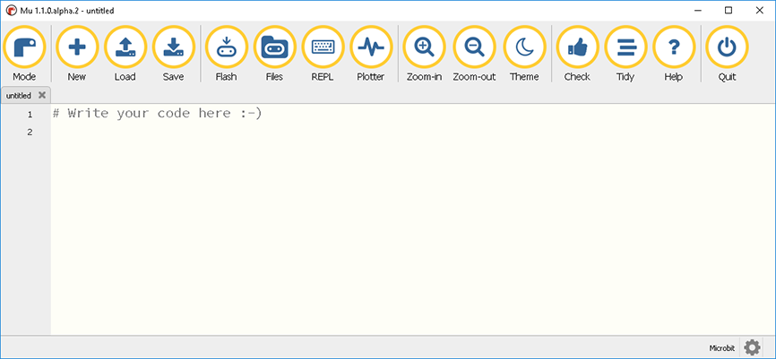

Вовед¶
Уредот Микро:бит – да се потсетиме¶
Уредот Микро:бит на Би-би-си е рачен микро-уред кој е првенствено создаден за да ги заинтересира децата за програмирање.
Мозокот на уредот Микро:бит е ARM процесорот, а основна комуникација со корисникот овозможуваат копчињата и ЛЕД-диодите кои ги содржи уредот. Покрај тоа, уредот Микро:бит е опремен и со бројни сензори кои ќе ни овозможат да го користиме овој микро-уред на интересен начин.
Екран
На предната страна од уредот Микро:бит се наоѓаат 25 ЛЕД-диоди кои се подредени во 5 редови и 5 колони. Тие се направени со таканаречената ЛЕД-технологија. ЛЕД е скратеница од Light Emitting Diode, што во превод значи диода што емитува светлина или светлечка диода. Осветлувањето кое е направено со оваа технологија, благодарение на долготрајноста и енергетската ефикасност, сè повеќе го заменува осветлувањето со халогени и флуоресцентни светилки во домаќинствата.
Копчиња
На левата и десната страна на екранот се наоѓа по едно копче. Копчињата се означени со буквите А и В и тие се користат како влезови. Уредот Микро:бит може да регистрира кое копче е притиснато и да реагира со тоа што ќе изврши наредба или ќе испрати информација до некој друг уред, зависно од тоа како сме го програмирале.
На задниот дел од уредот се наоѓа уште едно копче кое ни овозможува да ја ресетираме вчитаната програма.
Компас
Уредот Микро:бит има и вграден компас. Можеме да ја одредиме јачината на магнетното поле кое се наоѓа во близина, како и да одредиме кон која страна на светот е насочен уредот во моментот.
Акцелерометар
Акцелерометарот ни овозможува да детектираме разни движења со уредот, како на пример кога некој ќе го протресе, навали или испушти. Овој сензор може да придонесе нашите проекти да станат уште посодржајни и поинтересни.
Сензор за температура
Не постои посебен сензор за температура којшто е вграден во уредот Микро:бит, но можеме да го користиме вградениот сензор за температура што ја мери температурата на процесорот. Температурата што ја покажува уредот Микро:бит не е сосема прецизна, но можеме да ги следиме нејзините промени и да направиме различни проекти за кои ќе ги употребиме тие податоци.
Пинови
На работ од уредот Микро:бит се наоѓаат 25 конектори (пинови) – 5 големи и 20 мали. Петте големи (основни) пинови се означени со 0, 1, 2, 3V и GND. Пиновите 0, 1 и 2 служат за влез и излез и имаат општа намена. Преку нив, со употреба на проводникот со крокодил-штипки, можеме да поврземе разни дополнителни сензори со уредот, како и да управуваме со голем број уреди. Пиновите 3V и GND (ground – заземјување, маса) служат за напојување. Иако е означен со 3V, на излезот од овој пин добиваме напон од 3.3V во однос на масата.
BluetoothУредот Микро:бит е опремен со BLE (Bluetooth Low Energy) антена со чија помош може да се воспостави безжична комуникација со друг уред Микро:бит, компјутер, мобилен телефон или некој друг уред. Комуникацијата со други уреди е двонасочна, односно уредот Микро:бит може да прима податоци од нив, но и да им испраќа податоци.
Со уредот Микро:бит најлесно се програмира преку уредувач на блокови, но не е ни многу посложено доколку програмираме со некој од вистинските, текстуални програмски јазици како Javascript или Python.
Кога работиме со уредот Микро:бит (и други слични платформи) ја користиме верзијата на Python која се нарекува MicroPython. MicroPython е поедноставена верзија на Python, којашто не поддржува сè што поддржува стандардната верзија на Python. На пример, во MicroPython нема да можеме да ги користиме нашите кирилични букви и другите Unicode карактери или да форматираме стрингови. Може да наидете на уште некое ограничување, но мала е веројатноста за тоа бидејќи ќе ги имате на располагање сите делови на Python кои може да ни притребаат.
Околина во која најлесно се програмира со уредот Микро:бит во Python (поточно во MicroPython) e Mu (Мју). Иако оваа околина ќе ја користиме најмногу како уредувач за пишување кодови, таа ни нуди и други можности со кои ќе се запознаеме до одредена мера. |
Инсталирање на околината за развој Мu¶
Инсталацијата за околината Мu е достапна на веб-страницата: https://codewith.mu/en/download.
Изберете го оперативниот систем што сакате да го користите и преземете ја инсталацијата. Преземената датотека веројатно ќе ја најдете во папката Downloads (преземања). Пронајдете ја и започнете го процесот на инсталација со двоен клик.
Прифатете ги условите на лиценцата како што е прикажано на сликата и изберете ги предвидените корисници и местото на коешто сакате да се сними апликацијата:
Апликацијата Мu е успешно инсталирана, може да започнеме со работа!
Околината Мu¶
На самиот почеток, неопходно е да ја подготвиме околината за работа со уредот Микро:бит. За да го сториме тоа ќе кликнеме на Mode во горниот лев агол и ќе ја избереме опцијата BBC micro:bit.
{kind=link}
Веќе спомнавме дека околината за работа е навистина лесна и прегледна.
Главното мени се состои од петнаесет опции:
Подготвени сме да ја составиме првата линија на код!
Проверете го вашето знаење¶
Прашање 1: Колку светлечки диоди се наоѓаат на предната страна од уредот Микро:бит?
- 30.
- Одговорот не е точен, обидете се повторно!
- 36.
- Одговорот не е точен, обидете се повторно!
- 24.
- Одговорот не е точен, обидете се повторно!
- 25.
- Така е, уредот Микро:бит се состои од 25 светлечки диоди кои се распоредени во пет редови и пет колони.
Прашање 2: Кој од наведените сензори не е вграден во уредот Микро:бит?
- Сензор за температура.
- Одговор није тачан, на микробиту се налази овај сензор.
- Магнетометар (за јачина на магнетното поле).
- Одговор није тачан, на микробиту се налази овај сензор.
- Сензор за притисок.
- Така е, уредот Микро:бит не содржи сензор за притисок, но може да се поврзе со дополнителен сензор преку пинови
- сензор за ниво на осветленост
- Одговор није тачан, на микробиту се налази овај сензор.
Прашање 3: Дали е возможно да се управува безжично со уредот Микро:бит?
- Не е возможно.
- Одговорот не е точен, обидете се повторно!
- Возможно е, уредот Микро:бит има вградена Wi-Fi антена.
- Одговорот не е точен, обидете се повторно!
- Возможно е само доколку имаме оптичка видливост.
- Одговорот не е точен, обидете се повторно!
- Возможно е, уредот Микро:бит има вградена BLE антена.
- Точно, повеќе уреди Микро:бит може да комуницираат истовремено, а може да комуницираат и со компјутер, мобилен телефон или некој друг уред преку Bluetooth.
Прашање 4: Доколку сакаме графички да ги прикажеме податоците со некој сензор во реално време ќе ја избереме опцијата:
- Flash.
- Одговорот не е точен, обидете се повторно!
- REPL.
- Одговорот не е точен, обидете се повторно!
- Plotter.
- Така е, Plotter ни овозможува графички да ги прикажеме отчитувањата од сензорите кои се наоѓаат на уредот Микро:бит.
- Tidy.
- Одговорот не е точен, обидете се повторно!
Прашање 5: Копчето Flash служи за:
- да ја избришеме содржината од уредот Микро:бит.
- Одговорот не е точен, обидете се повторно!
- да провериме дали има грешки во кодот.
- Одговорот не е точен, обидете се повторно!
- да го зачуваме кодот на компјутер.
- Одговорот не е точен, обидете се повторно!
- да го вчитаме кодот во уредот Микро:бит.
- Одговорот е точен, еден од начините да го вчитаме кодот во уредот Микро:бит е со помош на копчето Flash.